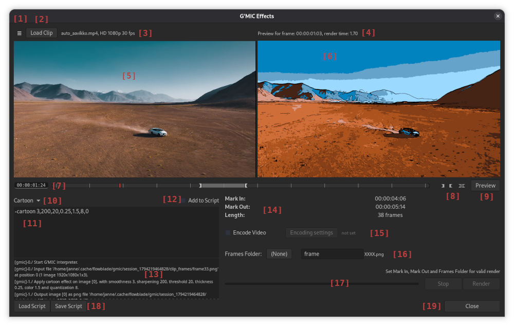

G'MIC is a full-featured open-source framework for image processing.
Flowblade G'MIC tool presents user with a selection of commands that can be used to achieve complex filtering of video clips.
NOTE: If a command is not present in the system then the corresponding filtering selection will not work.
Commands are mostly embedded in the /usr/bin/gmic binary itself, so to have access to more commands you will mostly need to upgrade the binary in your system.
G'Mic Tool Window

[1] G'Mic Application menu With menu items: Load Clip, G'Mic Webpage, Close.
[2] Load Clip button. Press to select Clip to work on.
[3] Clip Info. Clip name and properties
[4] Preview Info. Last Preview frame timecode anf the filter used.
[5] Current Clip Frame.
[6] Preview display.
[7] Timecode display and Positionbar Drag on Positionbar to select view frame and preview render target frame.
[8] Marks buttons Set and clear marks to select export render range.
[9] Preview button. Pres s to render preview for current displayed clip frame.
[10] Script Select menu See Using Timeline.
[11] Script Edit Area. Text area displaying the script input string used to achieve filterd output.
[12] Add to Script checkbutton. If this is active then selecting new item from script select menu appds the filtering command after current contents in Script Edit Area.
[13] Script output display. Text output from G'Mic created during rendering.
[14] Marks Info. Info Mark In, Mark Out positions and lengt of out put range.
[15] Encoding Controls. Activating chechkbutton renders video after frame sequence of filterd frames has been created. Encode Settings button opens a dialog to selcted desired video encoding.
[16] Frame Output Controls. Select name and target folder for frames created when doing export rendering.
[17] Render Info and Controls. Progressbar and start/stop buttons for rendering.
[18] Script Save and Load Buttons to save and load Script Edit Area contents.
[19] Close button.
Loading clip and rendering previews
- Start by pressing Load Clip button, and select the video clip you wish to apply filtering on.
- Press on the downward triangle on top of the Script Edit Area on the left middle of the window to select a gmic command.
- You can alter the values given to commands in the Script Edit Area.
- Press the Preview button on the right middle to view the filtered image.
- After rendering preview the area below Script Edit Area shows text output from gmic with possible error messages.
- You can apply multiple commands by checking Add to script checkbox.
Rendering Output
- To render a frame sequence you will need to set Mark In and Mark out points and select a folder to hold the rendered frame sequence.
- To render a video file from the filtered frame sequence, check Encode video checkbox and press the Encoding Settings button to set properties of the rendered video file.